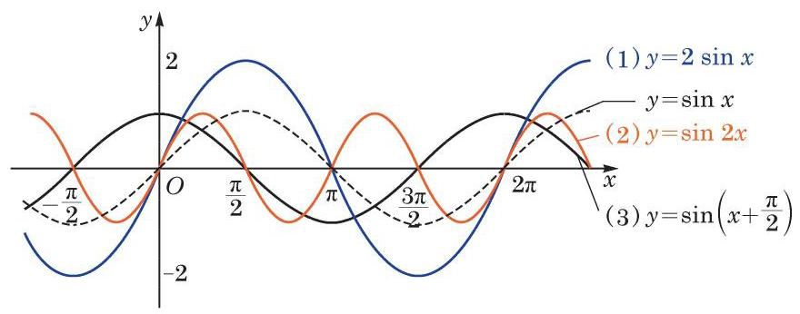
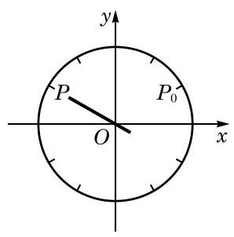
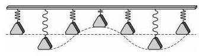
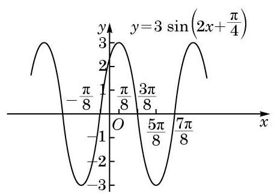
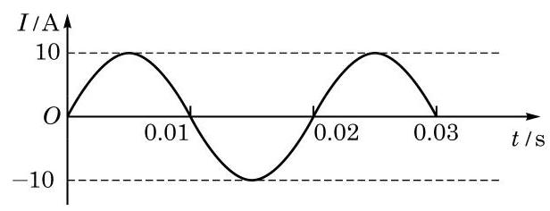
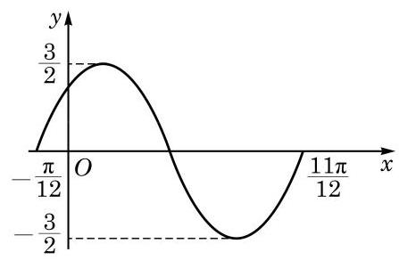
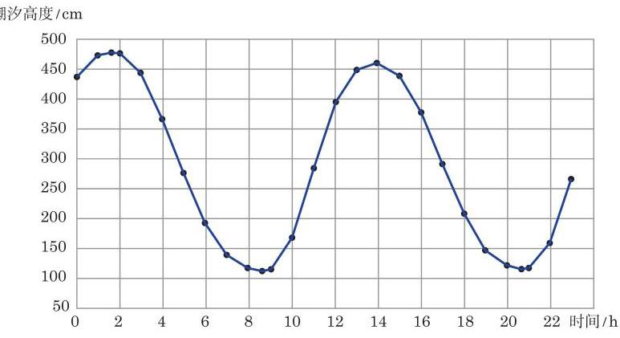
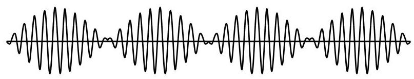
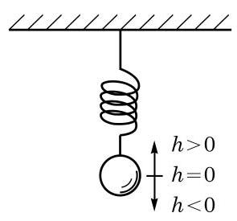
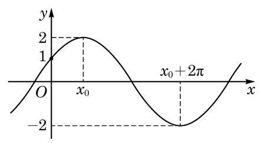

例题 1
例 1 当函数 中的常数 、 、 分别取下列各组值时,用计算器 (机) 在同一平面直角坐标系中作出它们的图像:
(1) ；
(2) ；
(3) .

图 7-3-3
学生阅读版 / 沪教版高中数学
必修第二册
第7章三角函数 · 保留教材主线与原题
教材与正式教参整合
在现实生活中, 我们知道钟表分针的转动具有周期现象. 怎样用函数来描述这种周期现象呢?

图 7-3-1
如图 7-3-1,假设分针的旋转中心到针尖末端的长度为 , 设 分时,分针针尖指向点 ,随着 的增加,分针沿顺时针方向走动,设经过 分钟,针尖指向点 .
以分针的旋转中心为坐标原点,建立如图 7-3-1 所示的平面直角坐标系. 设指向点 的针尖末端对应的点的纵坐标为 ,因为分针每分钟旋转 弧度,所以针尖末端对应的点在角 (弧度)的终边上,从而其纵坐标 关于时间 变化的函数关系为
弹簧下端挂着砝码上下振动. 若从 时刻开始，每间隔一小段时间(如 0.1 s)给弹簧和砝码拍一张照片，并按时间顺序, 将弹簧顶端对齐排成一列得到图 7-3-2.
在物理学和工程技术的许多问题中, 经常也会遇到形如 的函数 (其中 均是常数). 例如,物体做简谐运动(如单摆或弹簧的振动) 的过程中, 物体离开平衡位置的位移 与时间 的关系为

图 7-3-2
中 或 ,我们可以用诱导公式将它化为 且 .
若函数
下面，我们借助于计算器 (机) 来探讨 、 、 的变化对函数 图像的影响.
原教材节题： 函数 的图像
例 1 当函数 中的常数 、 、 分别取下列各组值时,用计算器 (机) 在同一平面直角坐标系中作出它们的图像:
(1) ；
(2) ；
(3) .

图 7-3-3
例 2 作出函数 的大致图像,并指出其振幅、频率和初始相位.

图 7-3-4
例 3 已知交流电的电流强度 关于时间 的函数为 ,其中 . 根据图像求出它的周期、频率和电流的最大值,并写出 和 的值.

图 7-3-5
(1) ； (2) .
A. ; B. ;
C. ; D. .

(第 3 题)
表 7-3
| 时间/h | 1 | 13 | 20 | |
| 潮汐高度/cm | 478 | 112 | 461 | 116 |

图 7-3-6
请根据以上数据,选择适当的函数模型,写出潮汐高度 关于时间 的函数的近似表达式.
当我们演奏钢琴、小提琴等乐器时，其琴弦振动引起周围空气的振动，这些振动再传到我们的耳膜引起耳膜振动, 我们就能听到美妙的音乐了. 虽然这些振动变化非常复杂, 但它们都有明显的周期性, 可以用三角函数来描述.
音叉振动产生的声音是纯音,可以用函数 来表示,其中振幅 决定音量的大小,频率 决定音调的高低. 频率高的声音尖利,而频率低的声音低沉. 纯音的频率固定, 很简单, 但它听起来非常单调.
在音乐会上，当多种乐器同时演奏时，我们可以通过泛音来辨别出不同乐器所发出的声音.
当两者的频率很接近,即 和 很接近时, 的频率很低, 会产生如下合成后的振动图像(图 7-3-7):

图 7-3-7
这时,我们可以听到时响时轻的拍音. 调整琴键的频率直到听不到拍音时,就得到 ,这个键就校准好了.
(1) ； (2) ；
(3) .
(1)小球开始振动 (即 ) 时的位置在哪里?
(2)小球最高点和最低点与平衡位置的距离分别是多少？
(3)经过多少时间小球往复振动一次？
(4)每秒钟小球往复振动多少次？

(第 5 题)

(第 2 题)
其中 . 记 的最大值分别为 、 ,试计算三相交流电的线电压的有效值 及 .